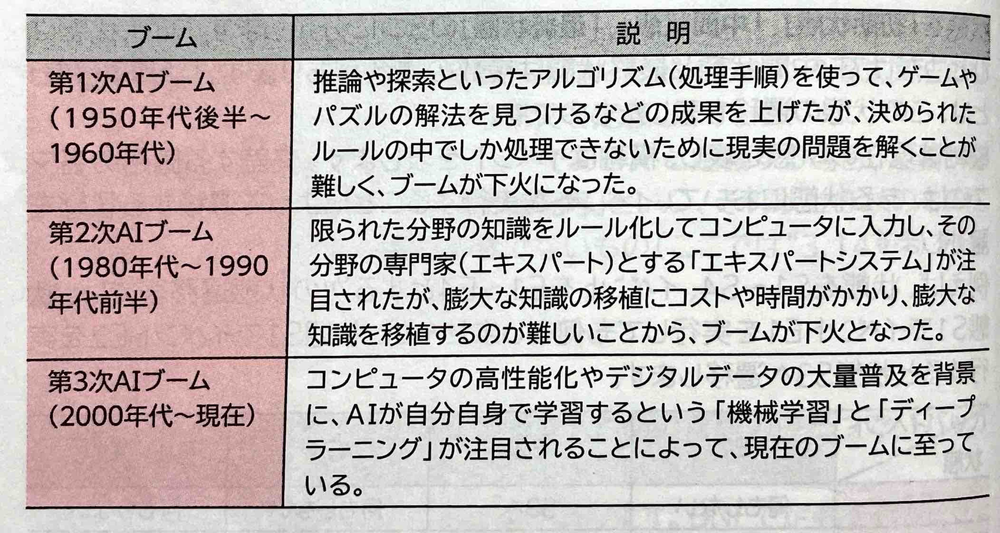
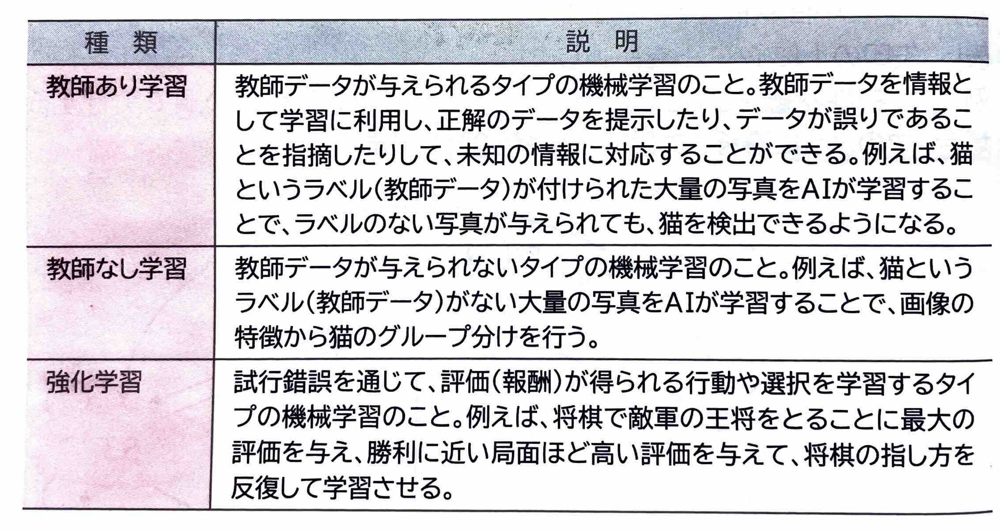
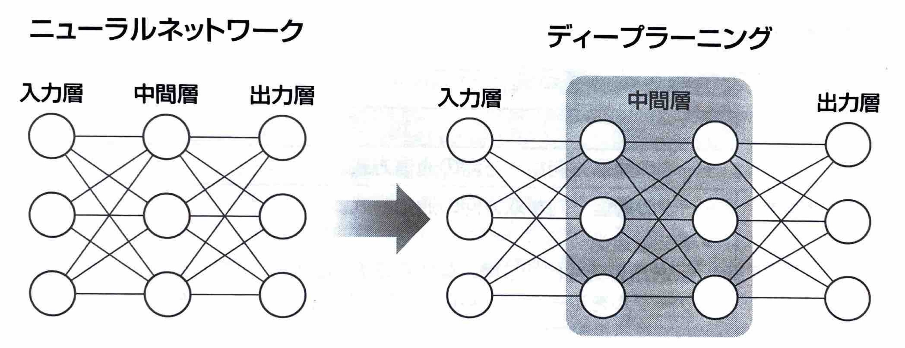
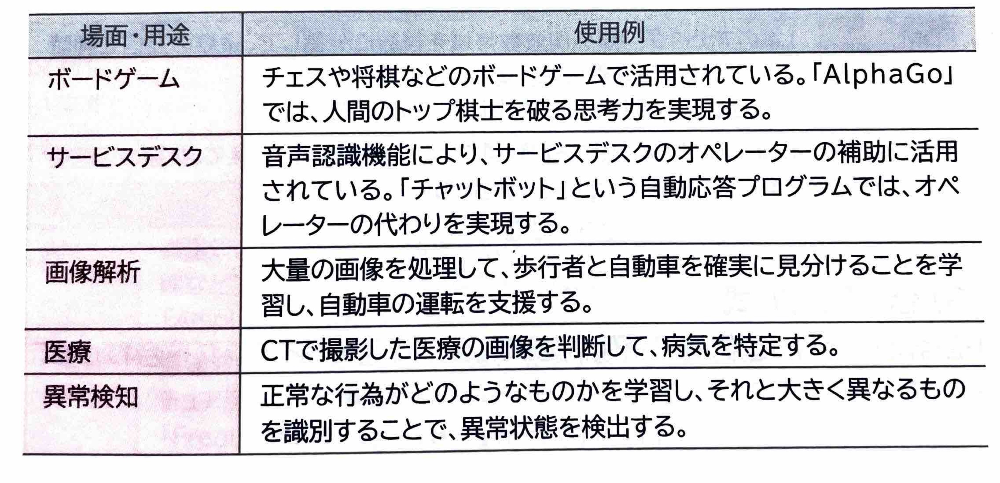

表示
｢AI｣
とは、人間の脳がつかさどる機能を分析して、その機能を人工的に実現させようとする試み、またはその機能を持たせた装置やシステムのことです。｢人工知能｣
ともいいます。
(2)機械学習｢機械学習｣
とは、明示的にプログラムで指示を出さないで、コンピュータに学習させる技術のことです。人間が普段から自然に行う学習能力と同等の機能を、コンピュータで実現することを目指します。｢教師データ｣
の与えられ方によって、次のように分類されます。
(3)ディープランニング｢ディープランニング｣
という手法が成果を上げ、注目されるようになりました。ディープランニングは、日本語では｢深層学習｣
を意味し、｢ニューラルネットワーク｣
の仕組みを取り入れています。
ディープランニングでは、人間が与える｢特徴量｣
などのヒントを使わずに、AIがデータと目標の誤差を繰り返し計算して、予測したものに適した特徴量そのものを大量のデータから自動的に学習します。これにより、人工的に人間と同じような解答を導き出すことが出来ます。